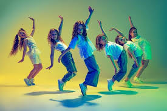
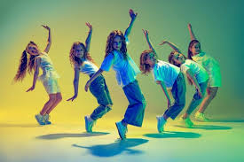
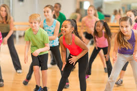

hip hop
Hip-hop or hip hop (originally disco rap) is a popular music genre that emerged in the early 1970s from the African-American community of New York City.
lets dance and have fun
Hip-hop or hip hop (originally disco rap) is a popular music genre that emerged in the early 1970s from the African-American community of New York City.
an artistic dance form performed to music, using precise and highly formalized set steps and gestures. Classical ballet, which originated in Renaissance Italy and established its present form during the 19th century, is characterized by light, graceful movements and the use of pointe shoes with reinforced toes.

Classical dance encompasses various forms, including the Indian classical dances like Bharatanatyam, Kathak, Odissi, and Kathakali, as well as ballet, which originated in Italy during the Renaissance. Indian classical dance styles are rooted in the Natya Shastra, a Sanskrit text, and often express Hindu religious themes and spiritual ideas. Ballet, on the other hand, developed in European courts, particularly in France, and is known for its theatrical and storytelling aspects.

Freestyle dance is a form of dance where the dancer improvises and creates their own movements spontaneously, rather than following a pre-set choreography. It's about interpreting music and expressing oneself in the moment. This can involve a variety of styles and techniques, often drawing from foundational street dance styles like hip-hop, locking, and popping.
